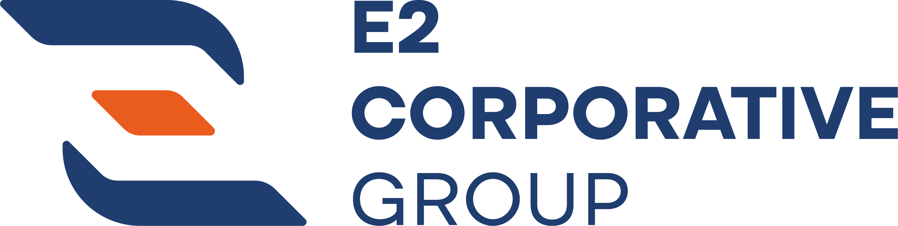

Cada servicio se contrata por separado o como un solo programa. Siempre con alcance escrito y un responsable con nombre.
“Documentaron en ocho semanas lo que llevábamos tres años explicando de voz en voz. Hoy el proceso sobrevive a las vacaciones.”
Dirección de Operaciones · empresa de 90 empleadosUna sesión de 60 minutos y un resumen escrito de los tres frentes más urgentes de tu operación.